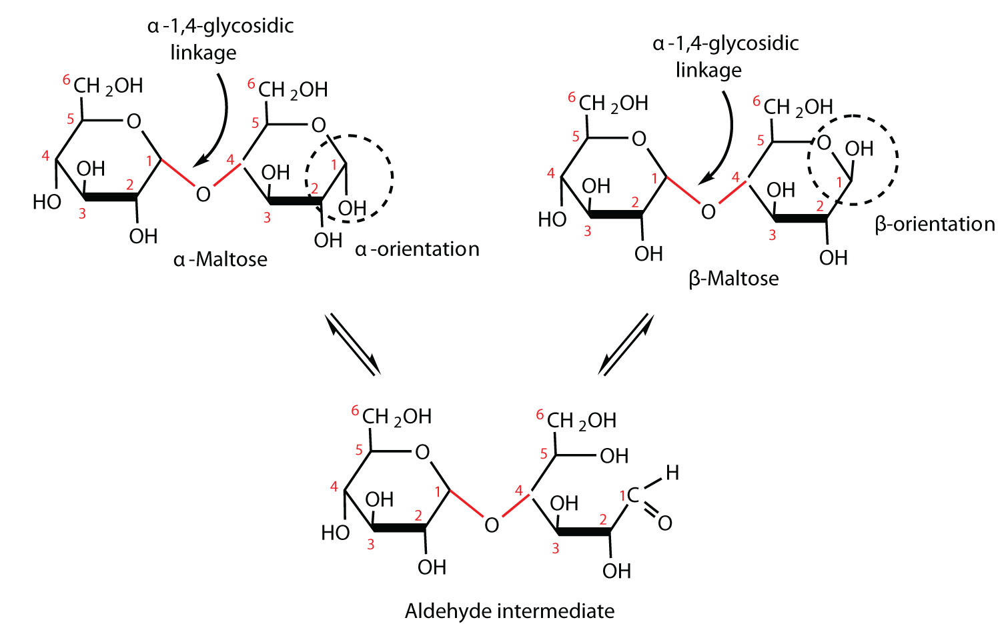

In Section 16.4 "Cyclic Structures of Monosaccharides", you learned that monosaccharides can form cyclic structures by the reaction of the carbonyl group with an OH group. These cyclic molecules can in turn react with another alcohol. Disaccharides (C12H22O11) are sugars composed of two monosaccharide units that are joined by a carbon–oxygen-carbon linkage known as a glycosidic linkageThe carbon–oxygen-carbon linkage between monosaccharide units in more complex carbohydrates, such as disaccharides or polysaccharides.. This linkage is formed from the reaction of the anomeric carbon of one cyclic monosaccharide with the OH group of a second monosaccharide.
The disaccharides differ from one another in their monosaccharide constituents and in the specific type of glycosidic linkage connecting them. There are three common disaccharides: maltose, lactose, and sucrose. All three are white crystalline solids at room temperature and are soluble in water. We’ll consider each sugar in more detail.
Maltose occurs to a limited extent in sprouting grain. It is formed most often by the partial hydrolysis of starch and glycogen. In the manufacture of beer, maltose is liberated by the action of malt (germinating barley) on starch; for this reason, it is often referred to as malt sugar. Maltose is about 30% as sweet as sucrose. The human body is unable to metabolize maltose or any other disaccharide directly from the diet because the molecules are too large to pass through the cell membranes of the intestinal wall. Therefore, an ingested disaccharide must first be broken down by hydrolysis into its two constituent monosaccharide units. In the body, such hydrolysis reactions are catalyzed by enzymes such as maltase. The same reactions can be carried out in the laboratory with dilute acid as a catalyst, although in that case the rate is much slower, and high temperatures are required. Whether it occurs in the body or a glass beaker, the hydrolysis of maltose produces two molecules of D-glucose.
Maltose is a reducing sugar. Thus, its two glucose molecules must be linked in such a way as to leave one anomeric carbon that can open to form an aldehyde group. The glucose units in maltose are joined in a head-to-tail fashion through an α-linkage from the first carbon atom of one glucose molecule to the fourth carbon atom of the second glucose molecule (that is, an α-1,4-glycosidic linkage; see Figure 16.8 "An Equilibrium Mixture of Maltose Isomers"). The bond from the anomeric carbon of the first monosaccharide unit is directed downward, which is why this is known as an α-glycosidic linkage. The OH group on the anomeric carbon of the second glucose can be in either the α or the β position, as shown in Figure 16.8 "An Equilibrium Mixture of Maltose Isomers".
Figure 16.8 An Equilibrium Mixture of Maltose Isomers
Lactose is known as milk sugar because it occurs in the milk of humans, cows, and other mammals. In fact, the natural synthesis of lactose occurs only in mammary tissue, whereas most other carbohydrates are plant products. Human milk contains about 7.5% lactose, and cow’s milk contains about 4.5%. This sugar is one of the lowest ranking in terms of sweetness, being about one-sixth as sweet as sucrose (see Table 16.1 "The Relative Sweetness of Some Compounds (Sucrose = 100)" in Section 16.3 "Important Hexoses"). Lactose is produced commercially from whey, a by-product in the manufacture of cheese. It is important as an infant food and in the production of penicillin.
Lactose is a reducing sugar composed of one molecule of D-galactose and one molecule of D-glucose joined by a β-1,4-glycosidic bond (the bond from the anomeric carbon of the first monosaccharide unit being directed upward). The two monosaccharides are obtained from lactose by acid hydrolysis or the catalytic action of the enzyme lactase:
Many adults and some children suffer from a deficiency of lactase. These individuals are said to be lactose intolerantThe inability to digest the lactose found in milk or dairy products due to a deficiency of the enzyme lactase. because they cannot digest the lactose found in milk. A more serious problem is the genetic disease galactosemiaA genetic disease caused by the absence of one of the enzymes needed to convert galactose to glucose., which results from the absence of an enzyme needed to convert galactose to glucose. Certain bacteria can metabolize lactose, forming lactic acid as one of the products. This reaction is responsible for the “souring” of milk.
For this trisaccharide, indicate whether each glycosidic linkage is α or β.
Solution
The glycosidic linkage between sugars 1 and 2 is β because the bond is directed up from the anomeric carbon. The glycosidic linkage between sugars 2 and 3 is α because the bond is directed down from the anomeric carbon.
For this trisaccharide, indicate whether each glycosidic linkage is α or β.
Lactose makes up about 40% of an infant’s diet during the first year of life. Infants and small children have one form of the enzyme lactase in their small intestines and can digest the sugar easily; however, adults usually have a less active form of the enzyme, and about 70% of the world’s adult population has some deficiency in its production. As a result, many adults experience a reduction in the ability to hydrolyze lactose to galactose and glucose in their small intestine. For some people the inability to synthesize sufficient enzyme increases with age. Up to 20% of the US population suffers some degree of lactose intolerance.
In people with lactose intolerance, some of the unhydrolyzed lactose passes into the colon, where it tends to draw water from the interstitial fluid into the intestinal lumen by osmosis. At the same time, intestinal bacteria may act on the lactose to produce organic acids and gases. The buildup of water and bacterial decay products leads to abdominal distention, cramps, and diarrhea, which are symptoms of the condition.
The symptoms disappear if milk or other sources of lactose are excluded from the diet or consumed only sparingly. Alternatively, many food stores now carry special brands of milk that have been pretreated with lactase to hydrolyze the lactose. Cooking or fermenting milk causes at least partial hydrolysis of the lactose, so some people with lactose intolerance are still able to enjoy cheese, yogurt, or cooked foods containing milk. The most common treatment for lactose intolerance, however, is the use of lactase preparations (e.g., Lactaid), which are available in liquid and tablet form at drugstores and grocery stores. These are taken orally with dairy foods—or may be added to them directly—to assist in their digestion.
Galactosemia is a condition in which one of the enzymes needed to convert galactose to glucose is missing. Consequently, the blood galactose level is markedly elevated, and galactose is found in the urine. An infant with galactosemia experiences a lack of appetite, weight loss, diarrhea, and jaundice. The disease may result in impaired liver function, cataracts, mental retardation, and even death. If galactosemia is recognized in early infancy, its effects can be prevented by the exclusion of milk and all other sources of galactose from the diet. As a child with galactosemia grows older, he or she usually develops an alternate pathway for metabolizing galactose, so the need to restrict milk is not permanent. The incidence of galactosemia in the United States is 1 in every 65,000 newborn babies.
Sucrose, probably the largest-selling pure organic compound in the world, is known as beet sugar, cane sugar, table sugar, or simply sugar. Most of the sucrose sold commercially is obtained from sugar cane and sugar beets (whose juices are 14%–20% sucrose) by evaporation of the water and recrystallization. The dark brown liquid that remains after the recrystallization of sugar is sold as molasses.
The sucrose molecule is unique among the common disaccharides in having an α-1,β-2-glycosidic (head-to-head) linkage. Because this glycosidic linkage is formed by the OH group on the anomeric carbon of α-D-glucose and the OH group on the anomeric carbon of β-D-fructose, it ties up the anomeric carbons of both glucose and fructose.
This linkage gives sucrose certain properties that are quite different from those of maltose and lactose. As long as the sucrose molecule remains intact, neither monosaccharide “uncyclizes” to form an open-chain structure. Thus, sucrose is incapable of mutarotation and exists in only one form both in the solid state and in solution. In addition, sucrose does not undergo reactions that are typical of aldehydes and ketones. Therefore, sucrose is a nonreducing sugar.
The hydrolysis of sucrose in dilute acid or through the action of the enzyme sucrase (also known as invertase) gives an equimolar mixture of glucose and fructose. This 1:1 mixture is referred to as invert sugar because it rotates plane-polarized light in the opposite direction than sucrose. The hydrolysis reaction has several practical applications. Sucrose readily recrystallizes from a solution, but invert sugar has a much greater tendency to remain in solution. In the manufacture of jelly and candy and in the canning of fruit, the recrystallization of sugar is undesirable. Therefore, conditions leading to the hydrolysis of sucrose are employed in these processes. Moreover, because fructose is sweeter than sucrose, the hydrolysis adds to the sweetening effect. Bees carry out this reaction when they make honey.
The average American consumes more than 100 lb of sucrose every year. About two-thirds of this amount is ingested in soft drinks, presweetened cereals, and other highly processed foods. The widespread use of sucrose is a contributing factor to obesity and tooth decay. Carbohydrates such as sucrose, are converted to fat when the caloric intake exceeds the body’s requirements, and sucrose causes tooth decay by promoting the formation of plaque that sticks to teeth.
What monosaccharides are obtained by the hydrolysis of each disaccharide?
Identify each sugar by its common chemical name.
Identify each sugar by its common chemical name.
For each disaccharide, indicate whether the glycosidic linkage is α or β.
For each disaccharide, indicate whether the glycosidic linkage is α or β.
Identify each disaccharide in Exercise 3 as a reducing or nonreducing sugar. If it is a reducing sugar, draw its structure and circle the anomeric carbon. State if the OH group at the anomeric carbon is in the α or the β position.
Identify each disaccharide in Exercise 4 as a reducing or nonreducing sugar. If it is a reducing sugar, draw its structure and circle the anomeric carbon. State if the OH group at the anomeric carbon is in the α or β position.
Melibiose is a disaccharide that occurs in some plant juices. Its structure is as follows:
Cellobiose is a disaccharide composed of two glucose units joined by a β-1,4-glycosidic linkage.
3a: nonreducing; 3b: reducing